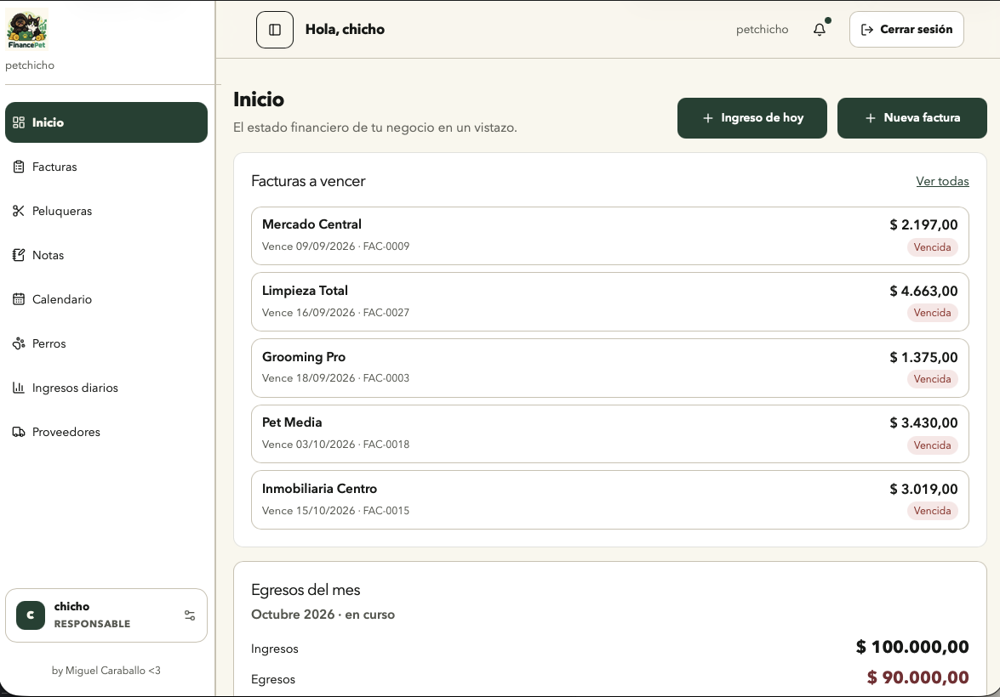
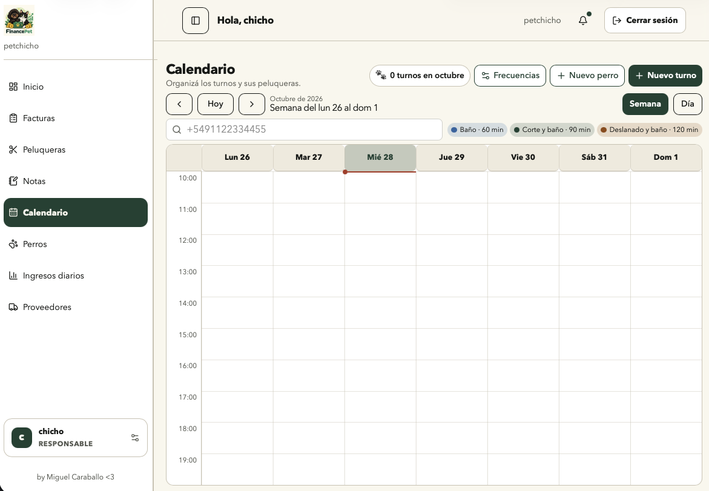

En producción · Proyecto propio
FinancePetEl día a día, más simple.
Turnos, facturación, pagos y stock en un solo lugar. Reemplacé agendas y planillas por un sistema que una veterinaria usa todos los días.
Lo diseño, desarrollo y mantengo. Su siguiente paso es Pichicho: un SaaS para peluquerías caninas, con su primer cliente externo activo.
- Python
- FastAPI
- React
- PostgreSQL